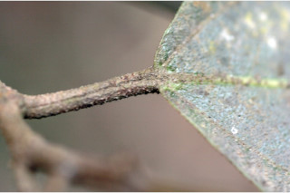
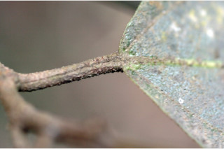

Images :
 



| Habit : | Deciduous trees , up to 18 m tall. |
| Leaves : | Leaves simple , alternate , spiral ; stipule in pairs, lateral , caducous and leaving scar ; petiole 1-6 cm long, canaliculate , with stout white scabrid hairs ; lamina 5.5-17 x 3-7.5 cm, broadly elliptic to obovate , apex abruptly acuminate , base rounded or acute-cuneate ; margin denticulate or sinuate to crenate (rarely lobed ), scabrid on both surface, coriaceous ; 3-nerved at base; midrib slightly raised above; secondary_nerves 3-6 pairs, prominent; tertiary_nerves broadly percurrent . |
| Inflorescence / Flower : | Inflorescence syconia, axillary , solitary , scabrid ; flowers unisexual ; peduncle to 1.5 cm. |
| Fruit and Seed : | Syconium, obovoid , up to 1.5 cm long, yellow or purple when ripe; achene oblong . |